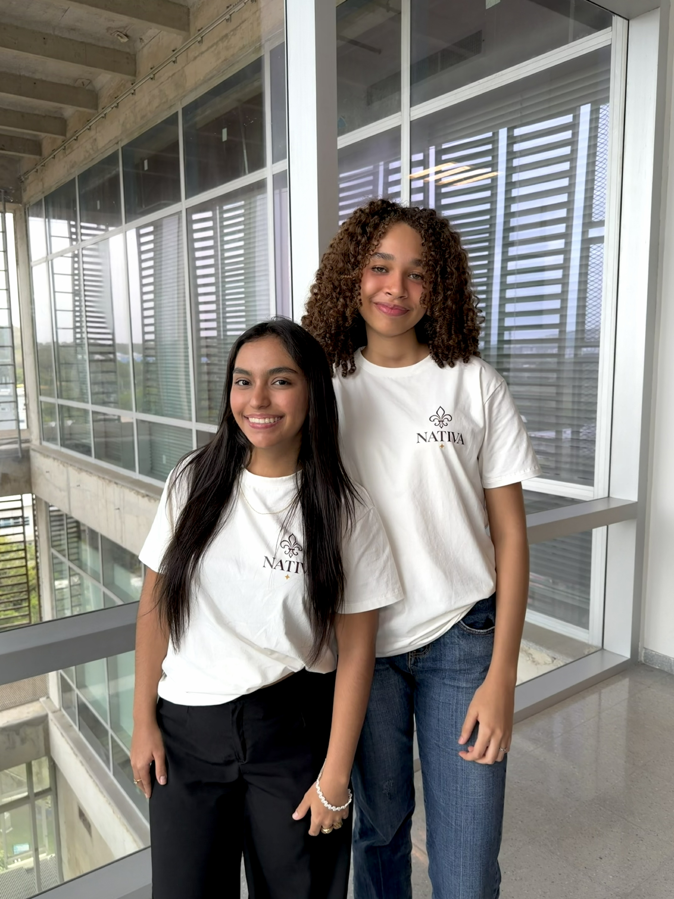
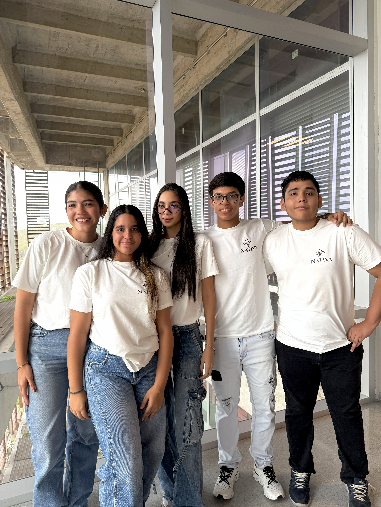
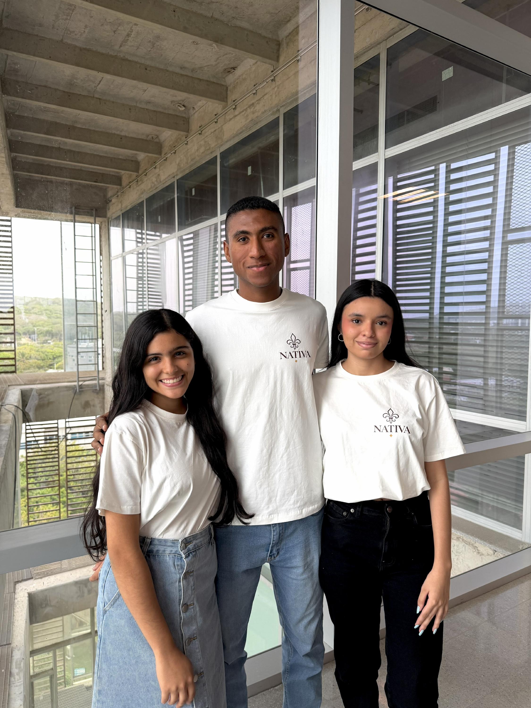
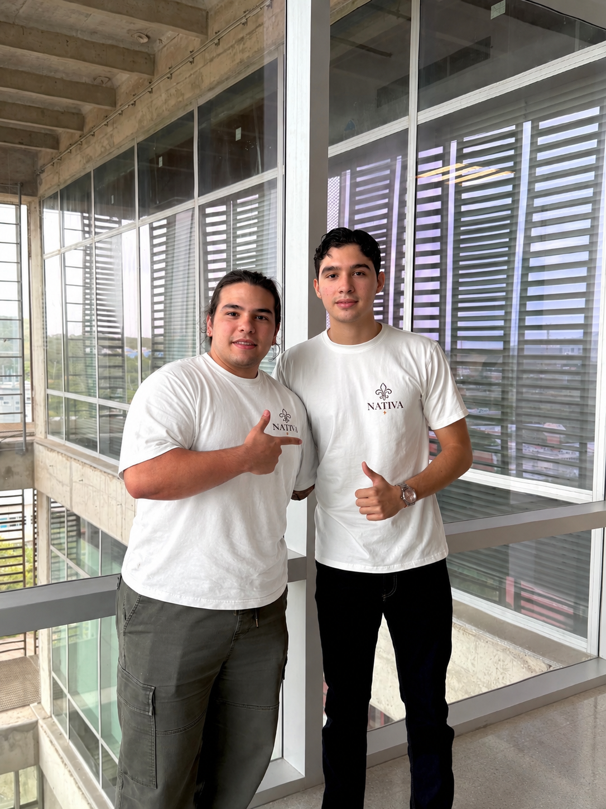
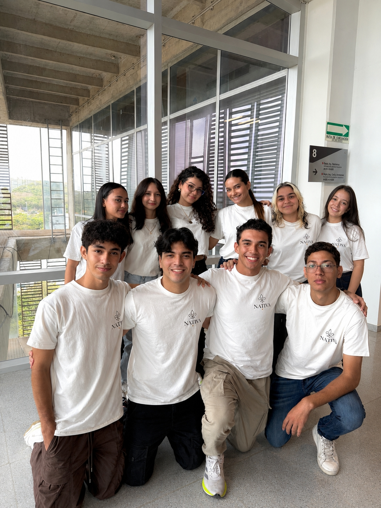
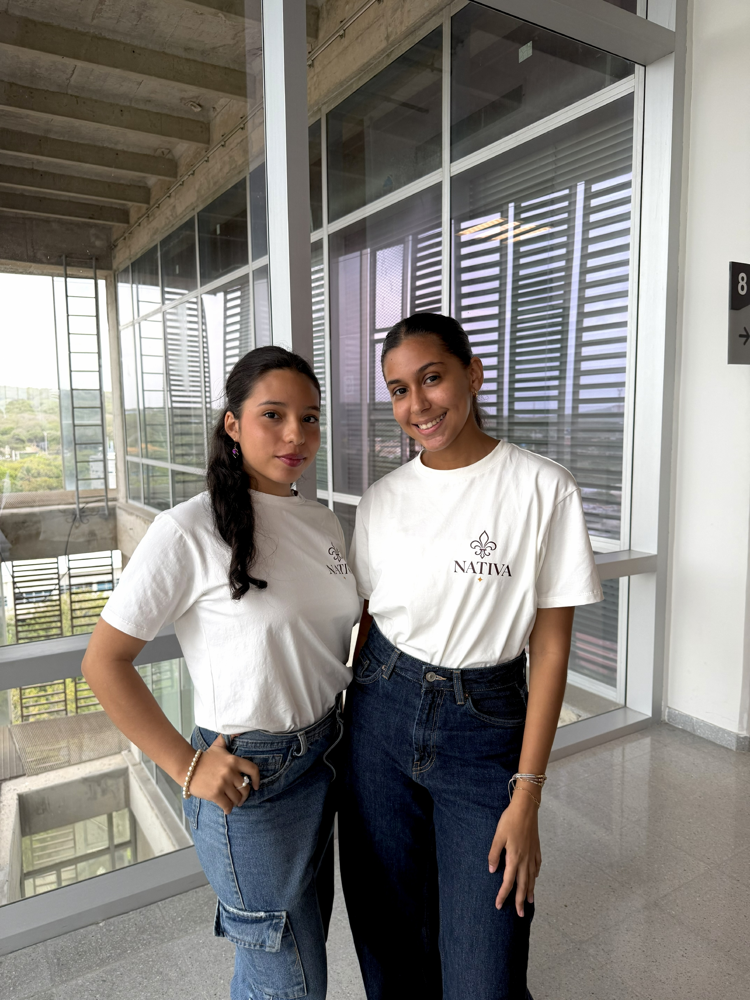

Bisutería artesanal · Hecha a mano
Bisutería artesanal que nace de un proyecto de Ingeniería Industrial: donde el diseño hecho a mano se encuentra con la gestión, los procesos y la resolución de problemas.
¿Qué es Nativa?
Nativa es una marca de bisutería artesanal hecha 100% a mano: accesorios exclusivos que fusionan diseño, calidad y oficio, con piezas atemporales que reflejan la identidad de quien las lleva.
Su nombre representa aquello que es auténtico y nacido de un origen propio: una identidad que no busca imitar, sino transformar lo que tenemos en algo único.
De dónde nace
Nativa nace como proyecto académico de Ingeniería Industrial: aplicar lo aprendido en el aula a un emprendimiento real, desde la idea hasta la puesta en marcha de una marca con tienda en línea.
Detrás de cada pieza hay estudio: análisis de mercado, diseño de procesos, costos, cadena de suministro y estrategia comercial. La artesanía es el alma; la ingeniería, la estructura que la hace sostenible.
Conocimientos de ingeniería industrial aplicados
Lo que hemos visto en la carrera, puesto en práctica en el proyecto:
Identificamos el público objetivo, analizamos la competencia y definimos la propuesta de valor a partir de datos, no de supuestos.
Estandarizamos cada etapa de fabricación artesanal — corte, ensamble, acabado y control de calidad — para lograr consistencia sin perder lo hecho a mano.
Calculamos costos de materiales, mano de obra y operación para fijar precios competitivos y sostenibles para el negocio.
Seleccionamos proveedores de materiales con criterios de calidad y trazabilidad, y planificamos compras e inventarios según la demanda.
Cada pieza pasa por una inspección de acabados y resistencia antes de llegar al cliente: cero defectos como estándar.
Construimos la identidad de marca, la presencia en redes sociales y la tienda en línea, aplicando principios de marketing y comercio electrónico.
Importancia del proyecto
Nativa demuestra que la Ingeniería Industrial no se queda en la teoría: es una herramienta para crear empresas reales, optimizar recursos y generar valor.
Además, revaloriza el trabajo artesanal local — dignificando el oficio y sus procesos — y sirve como modelo de emprendimiento aplicable a cualquier sector: análisis, planeación, ejecución y mejora continua.
Nuestro equipo
Los departamentos que hacen posible NATIVA:






Resolviendo problemas, creando valor
La Ingeniería Industrial es esto: ver un problema real, analizarlo, diseñar una solución y hacerla funcionar. Con NATIVA lo vivimos en cada decisión — y es solo el comienzo de todo lo que esta carrera nos permite construir.
Si te apasiona optimizar procesos, emprender y transformar ideas en realidades, la Ingeniería Industrial es para ti. Te invitamos a conocerla y estudiarla.
Explorar la tienda